Chapter 9
推理优化
Inference Optimization
让模型更快、更便宜
Introduction
新模型不断出现又消失，但让模型更好、更便宜、更快永远重要。前面章节讨论怎样变得更好，本章聚焦更快、更便宜。
模型再好，太慢会让用户失去耐心，甚至让预测失去意义——若预测明日股价却要两天才能算完，就毫无用处。模型太贵，投资回报也不值得。
优化可在模型、硬件、服务三个层级进行。模型层可缩小训练后模型，或设计更高效架构，例如消除 Transformer 注意力瓶颈；硬件层可设计更强芯片；推理服务在给定硬件上运行模型，处理请求，还可针对硬件优化模型，并结合用量、流量分配资源来降低延迟与成本。
因此推理优化是一项跨学科工作，模型研究员、应用开发者、系统工程师、编译器设计者、硬件架构师乃至数据中心运营者经常共同参与。
本章讨论 AI 推理瓶颈及解决技术，重点是模型和服务层，同时概览 AI 加速器，也讨论性能指标及权衡。有时加速同时降成本，例如降低精度让模型更小、更快；更多时候必须取舍，例如最好硬件更快却更贵。
开源模型越来越多，更多团队自建推理服务。即使不亲自实现，理解技术也有助评价服务和框架。应用延迟或成本正在造成问题时，本章可帮助诊断原因和潜在解法。
理解推理优化
Understanding Inference Optimization
AI 模型生命周期有两个阶段：训练是构建模型，推理是用模型为给定输入计算输出。除非亲自训练或微调，主要关心的就是推理。本节先建立全章共用词汇，熟悉者可跳到感兴趣部分。
推理概览
Inference Overview
生产中运行模型推理的组件叫推理服务器。它托管可用模型并连接所需硬件，根据应用请求（例如用户提示）分配资源执行相应模型，再把回答返回用户。
推理服务器属于更广的推理服务；服务还负责接收、路由并可能预处理请求，然后才送到服务器。简单架构见图 9-1。
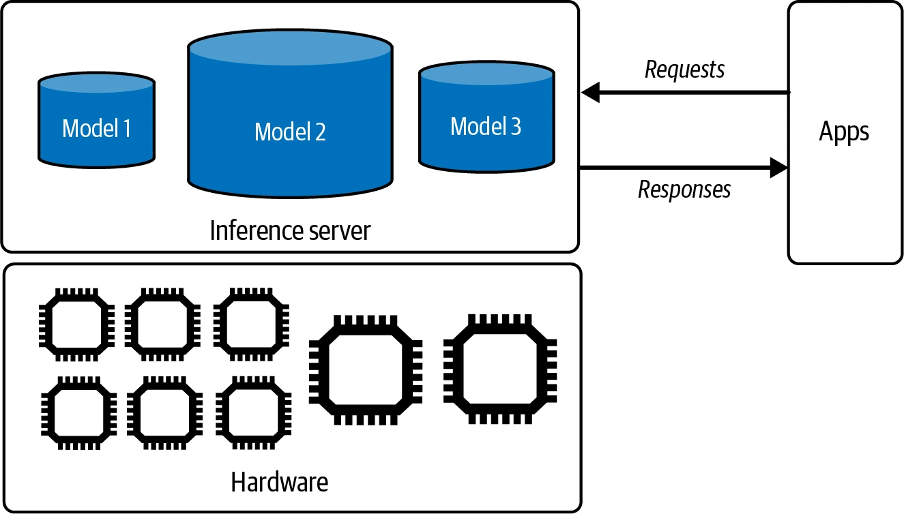
OpenAI、Google 的模型 API 都是推理服务。使用它们时无需实现本章大多数技术；自行托管模型时，则要自己构建、优化、维护服务。
计算瓶颈
Computational Bottlenecks
优化就是识别并解决瓶颈。城市交通优化要找拥堵点，推理服务器也要针对工作负载瓶颈设计。主要有两类：
计算受限（compute-bound）
完成时间由所需计算决定。例如密码解密需要密集数学运算，通常计算受限。
内存带宽受限（memory bandwidth-bound）
受系统内数据传输速率限制，例如数据在 CPU 内存、训练在 GPU 时，CPU→GPU 传输可能很久。文献常简称 memory-bound。
有人用 memory-bound 指容量不足，而非带宽不足，例如硬件装不下整个互联网，会出现工程师熟悉的 OOM。
容量不足通常可拆分任务缓解。例如 GPU 放不下完整模型，就把模型拆到 GPU 与 CPU；计算会因传输变慢，但传输足够快时问题会减轻。因此容量限制最后往往仍表现为带宽问题。
Williams 等人的 Roofline 论文（2009）用算术强度——每访问一个字节内存执行多少算术运算——区分两类瓶颈。NVIDIA Nsight 等分析工具会给出屋顶线图，见图 9-2。
计算受限可通过分散到更多芯片或使用更高 FLOP/s 的芯片加速；带宽受限则可使用更高带宽芯片。
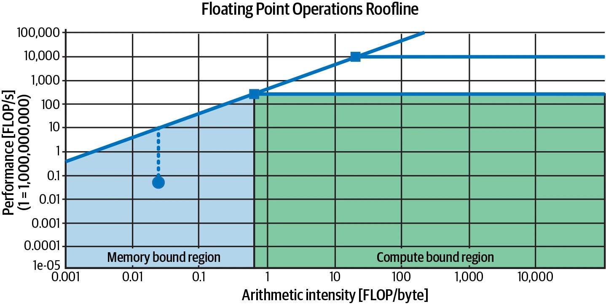
架构和负载不同，瓶颈也不同。Stable Diffusion 等图像生成推理通常计算受限，自回归语言模型通常带宽受限。
Transformer 语言模型推理有两步：
预填充（prefill）
并行处理输入词元；一次能处理多少受硬件运算数限制，因此计算受限。
解码（decode）
逐个生成输出词元。高层上要把模型权重等大矩阵载入 GPU，受内存加载速度限制，因此带宽受限。
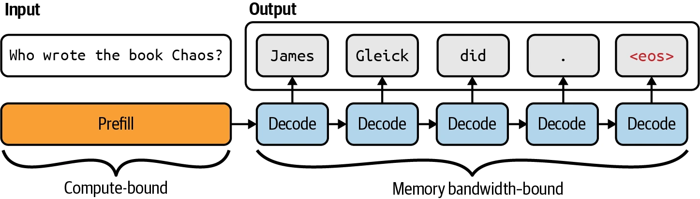
<eos> 表示序列结束词元。两步计算特征不同，生产中常部署在不同机器，本章服务优化部分会讨论。上下文长度、输出长度、请求批处理策略决定各自计算量和瓶颈。长上下文通常使负载带宽受限，但聪明优化可以消除。
由于 Transformer 流行而现有加速器有限，许多 AI 与数据负载目前带宽受限；未来软硬件进步可能让它们转为计算受限。
在线与批量推理 API
Online and Batch Inference APIs
供应商常提供两类 API：
- 在线 API：优化延迟，请求到达立即处理。
- 批量 API：优化成本。无严格延迟要求时，可用批量请求、高延迟和更便宜硬件换取效率。本书写作时 Gemini、OpenAI 批量 API 都便宜 50%，但完成时间从秒/分钟变成小时级。
在线 API 仍可在不显著影响延迟时批处理；真正差异只是在线追求低延迟，批量追求高吞吐。
聊天、代码生成等面向客户场景通常用在线 API。适合批量 API 的包括：
- 生成合成数据；
- 定期报告，例如 Slack 摘要、社交媒体品牌情感、客服工单分析；
- 新客户入驻时处理其全部上传文档；
- 迁移新模型时重处理所有数据；
- 为大量客户生成个性化推荐或简报；
- 重建组织数据索引以更新知识库。
API 默认返回完整回答，但自回归解码可能很久，用户没有耐心。很多在线 API 提供流式模式，生成一个词元就返回一个，缩短首次等待。缺点是无法在展示前给完整回答评分，用户更可能看到坏内容；风险被检测到后仍可追溯更新或删除。
传统 ML 中，在线推理是请求到达后计算；批量推理是请求前预计算。推荐系统输入有限且可预测，可提前为全部用户生成推荐，再在用户访问时取出。基础模型输入开放，很难预先预测所有提示。
推理性能指标
Inference Performance Metrics
优化前要知道优化什么。用户视角的核心是延迟（回答质量属于模型属性，不属于服务属性），应用开发者还要考虑吞吐与利用率，因为它们决定成本。
延迟、TTFT 与 TPOT
Latency, TTFT, and TPOT
延迟是从用户发送查询到收到完整回答的时间。自回归生成尤其在流式模式下可拆成：
首词元时间（TTFT）
查询后生成第一个词元需要多久，对应预填充时长并取决于输入长度。不同应用预期不同：对话机器人应近乎即时，长文档摘要则可等待更久。
每输出词元时间（TPOT）
首词元后，每个输出词元生成多快。每词元 100 ms 时，1,000 词元回答要 100 秒。流式阅读时只需快于人类阅读速度；很快的读者约 120 ms/词元，因此 120 ms、即每秒 6～8 词元足以满足多数场景。
词元间时间（TBT/ITL）
都衡量相邻输出词元间的时间。
总延迟 = TTFT + TPOT × 输出词元数
总延迟相同的应用也可能体验不同：用户偏爱第一个词元立即出现、之后慢一些，还是稍等首词元、之后快速输出？需要用户研究。可通过在解码与预填充间移动计算实例，牺牲 TPOT 降 TTFT，反之亦然。
用户观察的 TTFT 可能不同于模型，CoT 或智能体尤其如此，因为中间步骤不展示。有些团队改用发布首词元时间明确衡量用户真正看到的首词元。假设模型先生成不可见计划、执行动作并记录不可见输出，最后才生成展示回答；模型在第一步就开始生成，用户却到第三步才看到，因此用户 TTFT 长得多。
延迟是分布，平均值会误导。10 个 TTFT 中九个约 100 ms、一个 3,000 ms，平均会变成 390 ms，让服务看起来普遍很慢。异常可能来自网络错误或特别长的提示，仍应调查。请求量大时，离群点几乎不可避免。
百分位更有帮助。p50 即中位数；p50=100 ms 表示一半请求比它长、一半比它短。常看 p90、p95、p99 来发现异常，也应把 TTFT 对输入长度作图。
吞吐量与有效吞吐量
Throughput and Goodput
吞吐量衡量推理服务跨全部用户和请求每秒生成多少输出词元。有团队把输入输出都算进去，但预填充与解码瓶颈不同、现代服务器还常解耦，所以应分别计数；不加限定的 throughput 通常指输出。
常用单位是 tokens/s（TPS）。多用户时也用 tokens/s/user 判断扩展性。还可按一定时间内完成的请求数衡量，如 RPS；基础模型请求常需数秒，所以很多人用每分钟完成请求数 RPM。它有助了解并发处理；有些供应商会在并发过高时限流。
吞吐直接关联算力成本，越高通常越便宜。若硬件 $2/小时、吞吐 100 tokens/s，则每百万输出词元约 $5.556。每请求平均生成 200 词元，解码 1,000 个请求约 $1.11。
预填充类似计算：硬件 $2/小时、每分钟预填充 100 请求，则 1,000 请求约 $0.33。总成本是两者之和，即 $1.44/千请求。
好吞吐取决于模型、硬件、负载。小模型和高端芯片通常更高；输入输出长度一致的负载比长度多变的易优化。即使规模相近，直接比较也只是近似，因为模型分词器不同；按每请求成本评价服务器效率更好。
AI 应用也有延迟—吞吐权衡。批处理可提高吞吐，却增加延迟。LinkedIn 团队说，愿意牺牲 TTFT、TPOT 时，吞吐翻两三倍并不少见。
只按吞吐和成本优化会损害体验，因此有团队采用从网络领域引入的有效吞吐量（goodput）：每秒满足软件级目标 SLO 的请求数。若要求 TTFT≤200 ms、TPOT≤100 ms，服务每分钟完成 100 请求但只有 30 个达标，有效吞吐就是 30 RPM。
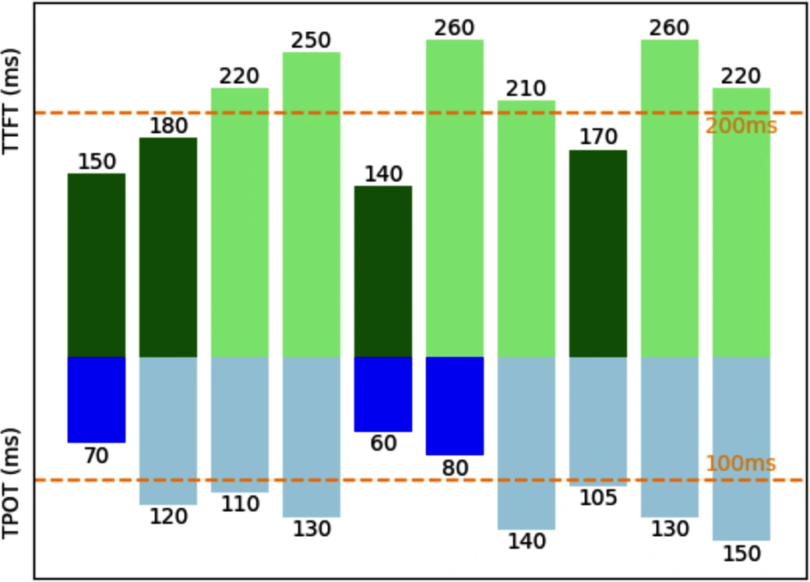
利用率、MFU 与 MBU
Utilization, MFU, and MBU
利用率衡量资源使用效率，即活跃使用量占总容量的比例。常被误解的是 GPU utilization。NVIDIA nvidia-smi 显示的是 GPU 积极处理任务的时间比例：十小时中工作五小时就是 50%。
但“正在处理”不代表高效。一个每秒能做 100 次运算的微型 GPU，即使只做 1 次，也可能报告 100%。真正关心的是机器全部可用运算中实际做了多少，即 MFU（Model FLOP/s Utilization）。
MFU 是观察吞吐相对峰值 FLOP/s 理论最大吞吐的比例。芯片理论能生成 100 tokens/s，实际服务只有 20，则 MFU=20%。
内存带宽同样昂贵，MBU（Model Bandwidth Utilization）衡量实际使用的可达带宽比例。峰值 1 TB/s、推理用 500 GB/s，则 MBU=50%。
推理已用带宽 = 参数量 × 每参数字节数 × tokens/s
MBU = 已用带宽 ÷ 理论峰值带宽
70 亿参数 FP16 模型（每参数 2 字节）达到 100 tokens/s，使用带宽： 7B × 2 × 100 = 700 GB/s。这说明量化很重要：每参数字节越少，占用宝贵带宽越少。在峰值 2 TB/s 的 A100-80GB 上，MBU=700 GB/s ÷ 2 TB/s = 70%。
吞吐与 MFU/MBU 都是线性关系，有人会用吞吐代称。怎样算好取决于模型、硬件、负载。计算受限通常 MFU 高、MBU 低；带宽受限相反。
训练负载更可预测、批处理更高效，MFU 通常高于推理。推理中预填充 MFU 高于解码。本书写作时训练 MFU 超过 50% 通常算好，但在特定硬件上很难达到。表 9-1 给出示例。
| 模型 | 参数量 | 加速器 | MFU |
|---|---|---|---|
| GPT-3 | 175B | V100 | 21.3% |
| Gopher | 280B | 4096 TPU v3 | 32.5% |
| Megatron-Turing NLG | 530B | 2240 A100 | 30.2% |
| PaLM | 540B | 6144 TPU v4 | 46.2% |
表 9-1 PaLM 论文中的 MFU 示例（Chowdhery 等，2022）。
图 9-5 展示 FP16 Llama 2-70B 在不同硬件上的 MBU。并发用户增加时 MBU 下降，可能因为每秒计算负担上升，让负载从带宽受限转向计算受限。
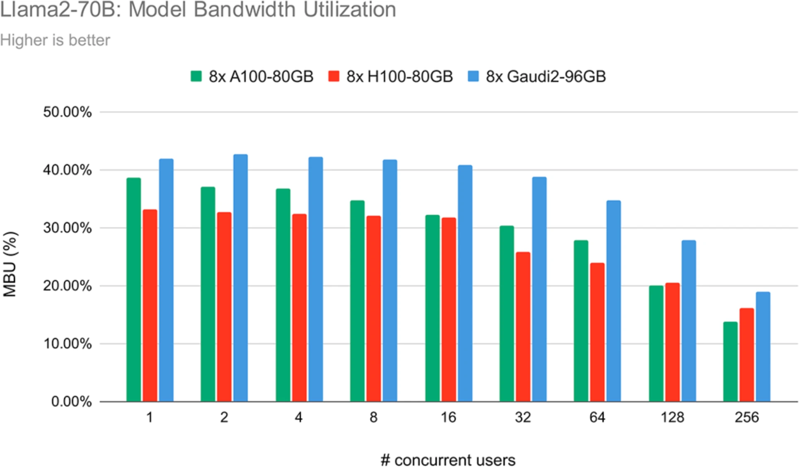
利用率适合追踪同硬件、相似负载下服务是否更高效，但目标不是选择利用率最高的芯片，而是更快、更便宜完成工作。如果成本和延迟都上升，高利用率毫无意义。
AI 加速器
AI Accelerators
软件能多快、多便宜取决于硬件。虽然有跨硬件优化，理解硬件能进一步深入。本节从推理视角介绍，也适用于训练。
AI 模型和硬件发展一直交织。计算机不够强是 1970 年代第一次 AI 寒冬的原因之一；2012 年深度学习复兴也与算力相关。AlexNet 广受关注的一项原因是首批成功使用 GPU 训练神经网络的论文之一。此前同规模模型要用数千 CPU；几块 GPU 对博士生和研究者可得得多，触发研究繁荣。
加速器是为加速特定计算负载设计的芯片，AI 加速器针对 AI。主导类型是 GPU，2020 年代初 AI 热潮的最大经济赢家无疑是 NVIDIA。
CPU 面向通用用途，GPU 面向并行处理。CPU 只有少量强核，高端消费设备通常不超过 64 核，适合操作系统、I/O、复杂顺序过程等高单线程任务；GPU 有数千个更小的核，适合拆成大量独立计算的图形渲染和 ML。ML 最主要操作是高度可并行的矩阵乘法。
高效并行提高计算能力，也给内存设计和功耗带来挑战。NVIDIA 的成功催生 AMD 新 GPU、Google TPU、Intel Habana Gaudi、Graphcore IPU、Groq LPU、Cerebras QPU 等。
很多芯片兼顾训练和推理，但专用推理芯片正成为趋势。调查显示，部署系统的推理可超过训练成本，并占 ML 成本最多 90%。训练因反向传播需要更多内存、也更难低精度；训练强调吞吐，推理强调延迟。所以推理芯片常优化低精度和快速内存访问，而非大容量。例子有 Apple Neural Engine、AWS Inferentia、Meta MTIA，以及 Google Edge TPU、NVIDIA Jetson Xavier 等边缘芯片。
还有为 Transformer 等特定架构优化的芯片；越来越多芯片从数据中心走向手机和笔记本。硬件架构有不同内存布局和专用计算单元，针对标量、向量、张量等类型，见图 9-6。
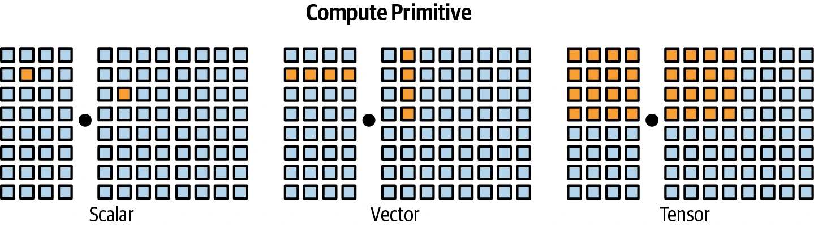
一块芯片可混合多类单元。GPU 传统支持向量运算，现代 GPU 加入针对矩阵和张量的 Tensor Core；TPU 则从一开始就以张量为主要原语。要高效运行模型，必须考虑其内存布局和原语。
计算能力、内存与功耗
Computational Capabilities, Memory, and Power
计算能力
通常用单位时间运算数衡量，最常见是 FLOP/s（常写 FLOPS），表示每秒浮点运算峰值。应用几乎不可能达到峰值；实际与理论之比就是一种利用率。
每秒运算数取决于数值精度：精度越高，能做的运算越少。两个 32 位数相加通常比 16 位数多约一倍计算，但不同芯片优化使比例不一定正好一半。表 9-2 是 NVIDIA H100 SXM 的规格。
| 数值精度 | 稀疏条件下 teraFLOP/s |
|---|---|
| TF32 Tensor Core | 989 |
| BFLOAT16 Tensor Core | 1,979 |
| FP16 Tensor Core | 1,979 |
| FP8 Tensor Core | 3,958 |
表 9-2 NVIDIA H100 SXM 的 FLOP/s 规格。TF32 实际是 19 位格式。
内存容量与带宽
GPU 大量核心并行工作，数据必须不断从内存移到核心。AI 权重矩阵和训练数据很大，必须快速移动才能让核心忙碌。GPU 内存要比 CPU 内存带宽更高、延迟更低，因此技术更先进、成本也更高。
CPU 通常用二维结构 DDR SDRAM，高端 GPU 常用三维堆叠 HBM。加速器通常与三级内存交互：
- CPU DRAM：系统/主机内存，带宽最低，约 25～50 GB/s；普通笔记本 16～64 GB，高端工作站可达 1 TB。
- GPU HBM：靠近 GPU 的专用内存，约 256 GB/s 到超过 1.5 TB/s；消费 GPU 常有 24～80 GB。
- 片上 SRAM：芯片内部的 L1/L2（有时 L3）缓存、寄存器和共享内存，常超过 10 TB/s，但容量通常不超过 40 MB。
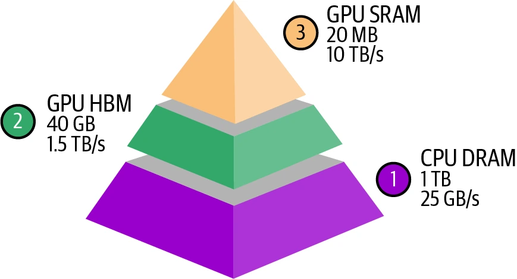
很多 GPU 优化都围绕如何利用内存层次。PyTorch、TensorFlow 目前不能细粒度控制访问，因此更多工程师学习 CUDA、OpenAI Triton、AMD 开源 ROCm 等 GPU 编程语言。
功耗
芯片靠晶体管开关完成计算，每次切换都耗能。A100 有 540 亿晶体管，H100 有 800 亿；高效运行时数十亿晶体管快速切换，消耗大量能量并产热，冷却又继续用电。
能耗给环境带来巨大压力。H100 满负载运行一年约耗 7,000 kWh，而美国家庭年均约 10,000 kWh，所以电力已成为扩展算力的瓶颈。
规格常写最大功耗或 TDP。最大功耗是满载峰值；TDP 是典型负载下冷却系统需散去的最大热量，不等于准确功耗，但可作为预期指标。CPU/GPU 最大功耗约为 TDP 的 1.1～1.5 倍，依架构与负载而变。
使用云服务无需自行处理冷却和供电，但这些数字仍能帮助理解环境影响与电力需求。
计算受限负载应关注更高 FLOP/s；内存受限负载则值得购买更高带宽与更大容量。评估时问三件事：能否运行？要多久？多少钱？FLOP/s、容量、带宽回答前两项；第三项根据云端使用费，或购置成本加持续电费计算。
推理优化
Inference Optimization
优化可在模型、硬件、服务层进行。用射箭比喻：模型优化是打造更好的箭，硬件优化是训练更强弓箭手，服务优化是完善从弓到瞄准条件的整个流程。
理想情况下，速度与成本优化不改变质量；实际很多技术会导致退化。图 9-8 展示同一 Llama 由不同推理供应商托管时，在基准上略有质量差异。
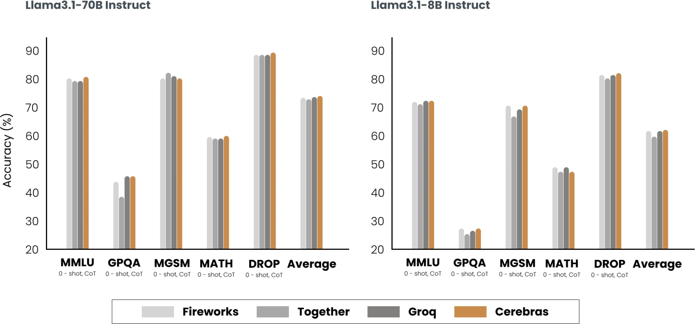
硬件设计超出本书范围，下面讨论模型与服务层。生产优化通常会组合多个层级的技术。
模型优化
Model Optimization
模型层优化常通过修改模型来提高效率，因此可能改变行为。当前许多基础模型采用 Transformer 并含自回归语言模型组件，三项特征让推理耗资源：模型规模、自回归解码、注意力机制。
模型压缩
Model Compression
模型压缩缩小模型，通常也让它更快。本书已介绍两种：第 7 章的量化降低精度以减少内存、提高吞吐；第 8 章的蒸馏训练小模型模仿大模型。
蒸馏暗示大模型行为可由较少参数捕捉。那么大模型内部是否存在一个参数子集，足以捕捉全部行为？这就是剪枝核心。
神经网络剪枝有两种含义：删除整个节点，改变架构并减少参数总数；或找到对预测最无用的参数并置零。后一种不减少参数总数，只减少非零参数，让模型稀疏，从而减少存储并加速。
剪枝后可直接使用，也可继续微调剩余参数，恢复性能。剪枝还能发现有希望的小架构，再从零训练。文献结果很鼓舞：Frankle 与 Carbin（2019）把某些网络非零参数减少 90% 以上，不损害准确率并改善速度。但目前实践中较少见，因为需要理解原架构、收益常不如其他方法，而且硬件未必能利用稀疏性。
仅权重量化最流行：易用、开箱支持多模型、效果明显。32 位降到 16 位，内存减半；但量化接近极限，不可能低于每值 1 位。蒸馏也常见，因为能得到满足需求、行为接近大模型的小模型。
自回归模型逐词元生成。每词元 100 ms 时，100 词元要 10 秒，不只慢还贵；API 输出词元价格约为输入词元 2～4 倍。Anyscale 实验发现一个输出词元对延迟的影响相当于 100 个输入词元。稍微改善解码就能显著改善体验。
领域演进很快，新方法不断尝试突破顺序生成瓶颈，未来也许会有从架构上消除瓶颈的模型。下面技术展示可能的方向。
推测解码
Speculative Decoding
推测解码（推测采样）让更快但较弱的草稿/提议模型先生成一串词元，再由真正要使用的目标模型验证。
给定输入词元 x1, x2, …, xt：
- 草稿模型生成 K 个词元：xt+1 … xt+K；
- 目标模型并行验证这 K 个词元；
- 从左到右接受目标模型同意使用的最长草稿子序列；
- 若接受 j 个，再由目标模型多生成一个 xt+j+1，随后循环。
若一个草稿都不接受，这轮只产生目标模型的一个词元；全部接受则产生 K+1 个。
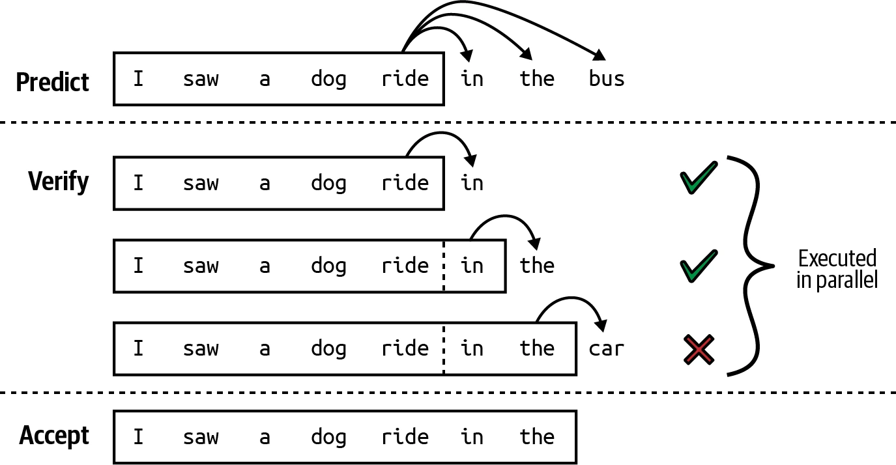
若草稿全被拒，目标模型既验证又自己生成，似乎会更慢；但三点洞见避免了这一结果：
- 并行验证一串词元比顺序生成快；推测解码把解码计算特征变得像预填充。
- 输出中有些词元较容易预测，可找到弱模型准确猜中，取得高接受率。
- 解码带宽受限，通常有闲置 FLOP 可“免费”用于验证。
接受率依领域而变，代码等结构化文本通常较高。K 越大，目标模型验证调用越少，但接受率可能越低。草稿模型可用任意架构，理想上与目标共享词表和分词器；可专门训练，也可用现成弱模型。
DeepMind 为 Chinchilla-70B 训练同架构 40 亿参数草稿模型，生成速度是目标的 8 倍（1.8 对 14.1 ms/词元），整体延迟减半以上且不损质量；T5-XXL 也有类似提升。
该方法容易实现且不改变质量，PyTorch 约 50 行代码即可完成，已进入 vLLM、TensorRT-LLM、llama.cpp。
参考式推理
Inference with Reference
回答经常需要复用输入词元。基于附件问答时，模型可能逐字引用文档；修复代码时，大部分原代码不变。与其让模型重新生成，何不直接从输入复制？这就是参考式推理。
它类似推测解码，但草稿不是模型生成，而是从输入中选择。关键是在每步找到上下文最相关文本段，最简单做法是寻找与当前词元匹配的片段。
它无需额外模型，但只适合上下文和输出高度重叠的检索、编码、多轮对话。Yang 等人（2023）在这些场景中实现约 2 倍生成加速。
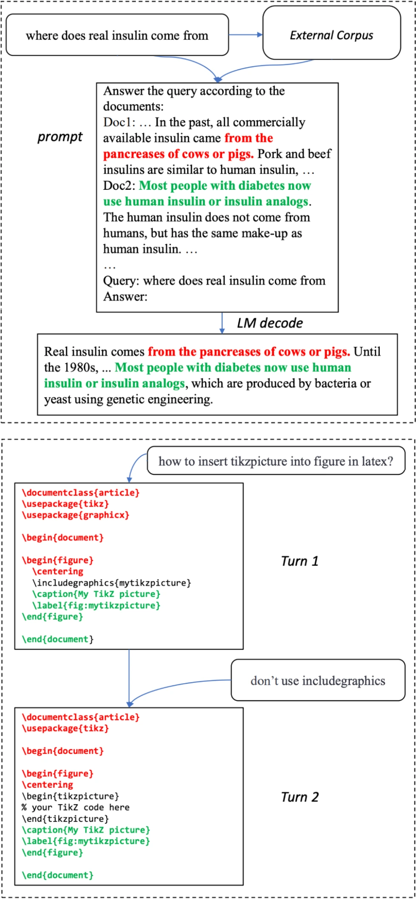
并行解码
Parallel Decoding
另一些技术不使用草稿，而是打破顺序依赖。给定 x1…xt，尝试同时生成 xt+1…xt+k，也就是说还不知道 xt+1 时就预测 xt+2。
这可能奏效，因为既有序列经常足以预测接下来多个词。“the cat sits”后即使不知道下一个是 on、under 还是 behind，也可能预测再下一个是 the。
并行词元可由同一解码器产生，如 Lookahead decoding；也可由不同解码头产生，如 Medusa。Medusa 在原模型上增加多个小型神经层，每个头预测特定未来位置。原模型预测 xt+1，第 k 个头预测 xt+k+1；训练头时冻结原模型。NVIDIA 称 Medusa 在 HGX H200 上把 Llama 3.1 生成最高加速 1.9 倍。
非顺序生成的词元必须验证并整合。Lookahead 用 Jacobi 方法：
- 并行生成 K 个未来词元；
- 验证它们与上下文的一致性、连贯性；
- 若部分失败，只重新生成或调整失败词元；
- 持续细化直到全部通过并并入输出。
这一族也叫 Jacobi 解码。Medusa 则用树形注意力，每个头为每个位置产生数个选项，组织成树，选择最有希望的组合。
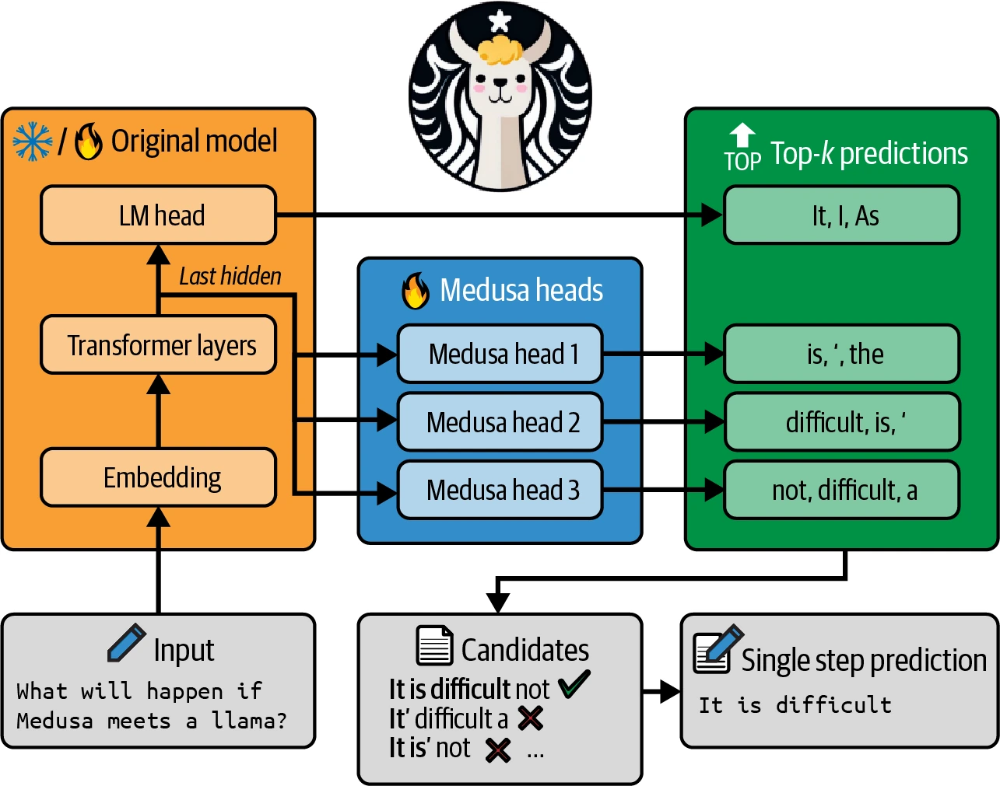
绕过顺序依赖很有吸引力，但并行解码不直观，Medusa 等技术也较难实现。
注意力机制优化
Attention Mechanism Optimization
第 2 章提到，生成下一词元需要此前全部词元的 key、value 向量。生成 xt+1 时不应再次计算 x1…xt−1，而应复用上一步结果，只计算最新 xt。保存这些向量供复用的缓存叫 KV cache，新向量不断追加。
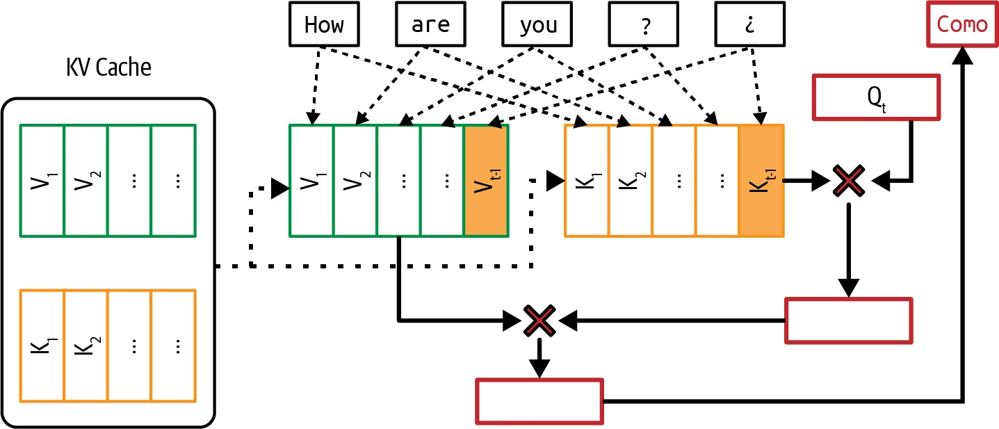
KV 缓存只用于推理。训练时整段序列已知，下一词元可一次并行计算，不需要顺序生成和 KV 缓存。
生成词元要与全部此前词元计算注意力，计算量按序列长度 O(n²) 增长；KV 缓存大小则线性增长，也随批量增大。Google 计算，500B+ 多头注意力模型在批量 512、上下文 2048 时，KV 缓存达 3 TB，是权重大小三倍。
缓存最终受硬件容量限制，成为长上下文瓶颈；载入大缓存也耗时，不利于严格延迟。注意力的计算和内存需求正是长上下文困难的原因。技术主要分三类：重设计注意力、优化 KV 缓存、编写注意力内核。
KV 内存 = 2 × B × S × L × H × M
- B：批量大小；S：序列长度；L：Transformer 层数；
- H：模型维度；M：数值表示每值所需字节（如 FP16/FP32）。
Llama 2 13B 有 40 层、维度 5,120。B=32、S=2,048、每值 2 字节时： 2 × 32 × 2,048 × 40 × 5,120 × 2 = 54 GB。
重设计注意力机制
这会直接改变架构，只能训练或微调时采用。局部窗口注意力生成新词元时只关注固定大小的附近窗口，减少有效序列长度、缓存和计算。平均 10,000 词元、窗口 1,000 时，KV 缓存缩小 10 倍。局部注意力可与全局注意力交错：前者捕捉近邻上下文，后者捕捉跨文档任务信息。
跨层注意力在相邻层共享 key/value；三层共享可缩小三倍。多查询注意力在多个 query head 间共享 key/value。分组查询注意力是更灵活推广：把 query head 分组，仅组内共享，平衡头数量与 key/value 数量。
Character.AI 平均对话历史有 180 条消息，KV 缓存是吞吐主要瓶颈。多查询、局部/全局交错、跨层三种设计让缓存缩小 20 倍以上，使大批量服务不再受内存限制。
优化 KV 缓存
缓存管理对缓解内存瓶颈、扩大批量尤其重要。vLLM 因 PagedAttention 流行：把缓存切成不连续块，减少碎片并灵活共享内存。其他方法包括 KV cache 量化、自适应压缩和选择性缓存。
为注意力计算编写内核
不改机制或存储，而优化注意力分数的计算方式；结合执行硬件时最有效。针对特定芯片的优化代码叫内核。著名的 FlashAttention 把 Transformer 中多个常用操作融合起来加速。
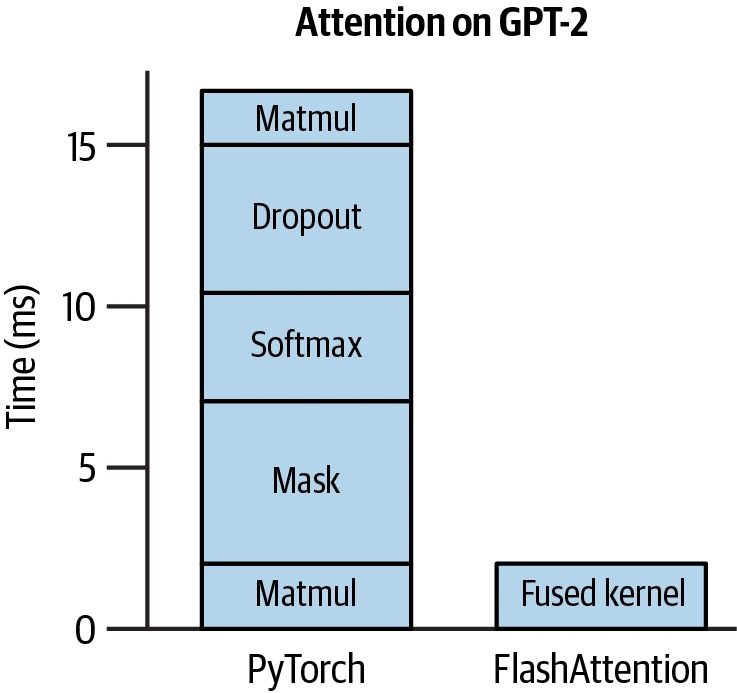
内核与编译器
Kernels and Compilers
内核是针对 GPU/TPU 等硬件优化的专门代码，执行需要反复、并行运行的计算密集例程。矩阵乘法、注意力、卷积都有专门内核。
编写内核要深入理解缓存、全局/共享内存、寄存器等层次和数据移动，通常用 CUDA、Triton、ROCm 等低层语言。它们能细粒度控制线程和访问，却比 Python 难学。
过去内核像少数人的黑魔法。NVIDIA、AMD 聘优化工程师为自家硬件写内核；PyTorch、TensorFlow 聘内核工程师适配加速器。推理优化需求上升后，更多 AI 工程师开始学习。四种常见技术：
- 向量化：循环中同时处理内存连续的多个元素，减少数据 I/O 和延迟。
- 并行化：把数组/高维数组拆成独立块，在不同核或线程同时处理。
- 循环分块：按硬件内存布局和缓存优化访问顺序；CPU 高效模式未必适合 GPU。
- 算子融合：把多个算子合成一次遍历，避免重复内存访问；例如两个循环处理同一数组时合并。
前三者广泛适用，算子融合需要更了解具体模型算子和架构。硬件更新后必须开发新内核；FlashAttention 最初面向 A100，后来 FlashAttention-3 面向 H100。
模型脚本规定要执行的操作序列，运行到 GPU 前要转换成硬件兼容语言，这叫降低（lowering）；完成转换的工具叫编译器。编译器连接模型和硬件，降低时尽量把操作转换成专用内核。
PyTorch 团队按以下步骤提高 Llama-7B 吞吐：
- 调用
torch.compile编译成更高效内核； - 把权重量化到 INT8；
- 继续量化到 INT4；
- 加入推测解码。
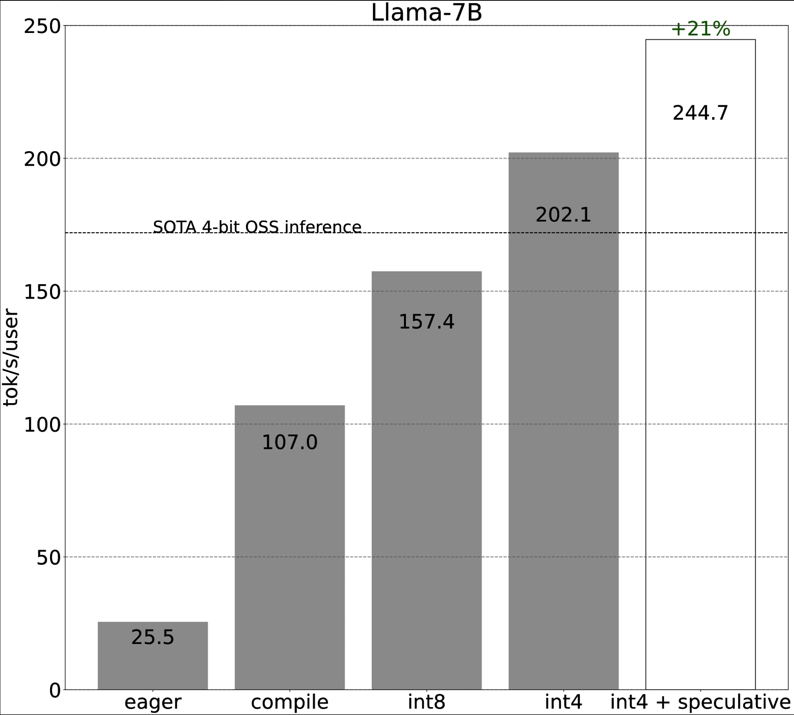
实验在 80 GB A100 上运行，没有说明对输出质量的影响。编译器可以独立存在，如 Apache TVM、MLIR；也可集成在框架中，如 torch.compile、XLA/OpenXLA、针对 NVIDIA 的 TensorRT 编译器。AI 公司还可能拥有专有编译器和内核，以加速自家负载。
推理服务优化
Inference Service Optimization
服务层技术大多聚焦资源管理：给定固定计算与内存，以及由不同模型、不同用户请求组成的动态负载，高效分配资源以优化延迟和成本。与很多模型层技术不同，它们不修改模型，理论上不改变输出质量。
批处理
Batching
降低成本最简单的方法之一是批处理。生产服务可能同时收到多个请求；把相近时间到达的请求合在一起，能显著提高吞吐。单独处理像人人开车，批处理像坐公交；公交能运更多人，也可能让个人旅程变长，但智能调度可把延迟影响降到最低。
三种主要技术是静态、动态、连续批处理。
静态批处理
把固定数量输入组成批次，像坐满才发车的公交。所有请求必须等批次满，首个请求会等到最后一个到达，不管它多晚。
动态批处理
为每批设最大时间窗口。批大小 4、窗口 100 ms 时，收到 4 个或经过 100 ms 就处理，先到者为准，像按时或坐满就发车。延迟受控，但批次可能没满，浪费计算。
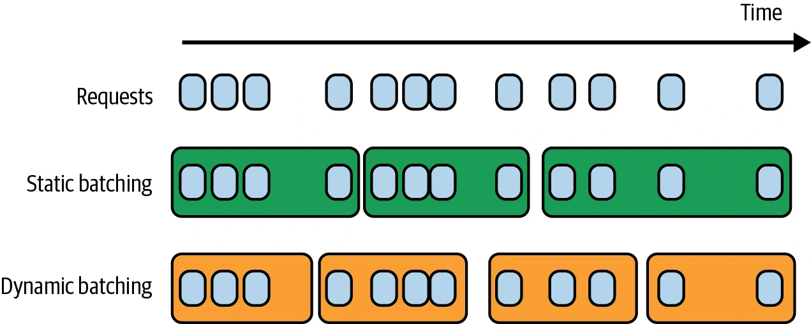
连续批处理
朴素批处理要等一批所有请求结束才返回。LLM 请求长度差异很大：10 词元短回答若和 1,000 词元回答同批，会无谓等待。
连续批处理让完成的回答立即返回，通过只合并不会让一个回答阻塞另一个的操作实现（Orca，Yu 等，2022）。一个请求完成并返回后，马上用新请求补位，像公交每放下一名乘客就再载一名，维持占用率。它也叫 in-flight batching。
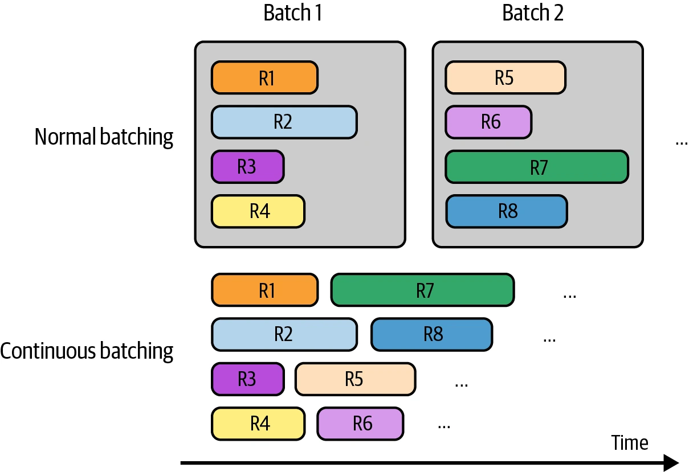
解耦预填充与解码
Decoupling Prefill and Decode
预填充计算受限、解码带宽受限，在同一机器执行会低效争抢资源，TTFT 与 TPOT 都变慢。GPU 已接近计算峰值时，也许还能加入低计算量的解码任务；但新查询会同时带来重预填充任务，它可能抽干已有解码的算力，让 TPOT 变慢。
常见技术是把两步分散到不同 GPU。DistServe（Zhong 等，2024）与 Inference Without Interference（Hu 等，2024）显示，对多种 LLM 和应用，这可在满足延迟的同时显著增加请求量。虽然要把中间状态从预填充实例传到解码实例，现代 GPU 集群节点内有 NVLink 等高带宽连接，通信开销并不大。
两类实例比例取决于负载和延迟要求：输入长、优先 TTFT 时可为 2:1～4:1；输入短、优先 TPOT 时可为 1:2～1:1。
提示缓存
Prompt Caching
应用提示经常有重叠文本。提示缓存保存这些片段以复用，只处理一次。最常见重叠是系统提示；无缓存时每次查询都处理，有缓存时首个查询处理一次即可。
长文档查询尤其适合：大量查询围绕同一本书或代码库时，可跨查询复用。长对话也可缓存早期消息，在预测后续消息时复用。提示缓存也叫上下文缓存或前缀缓存。
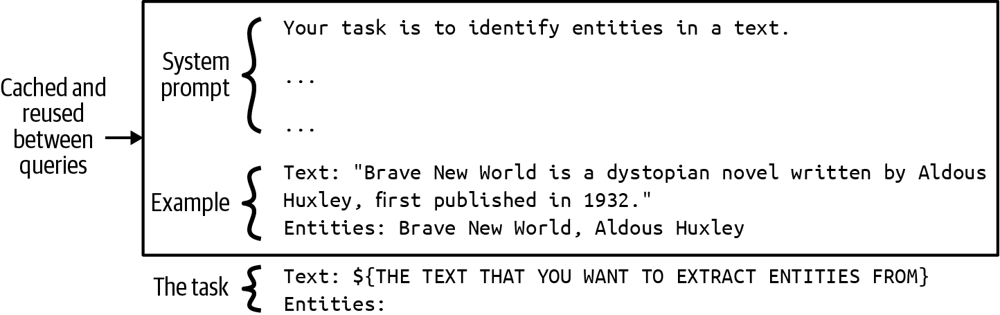
长系统提示应用可显著降延迟和成本。系统提示 1,000 词元、每天一百万次 API 调用，缓存每天省去约十亿个重复输入词元。但并非免费：和 KV 缓存一样会占大量内存；若模型 API 不内置，实现需要显著工程工作。
自 Gim 等人 2023 年 11 月提出后，缓存快速进入 API。写作时 Gemini 缓存输入比普通输入便宜 75%，但存储按每百万词元每小时 $1 收费；Anthropic 宣称最多省 90% 成本、降 75% 延迟，见表 9-3。
| 用例 | 无缓存 TTFT | 有缓存 TTFT | 成本降低 |
|---|---|---|---|
| 与书对话（缓存 100K 词元） | 11.5 s | 2.4 s（−79%） | −90% |
| 多样本提示（10K 词元） | 1.6 s | 1.1 s（−31%） | −86% |
| 多轮对话（10 轮，长系统提示） | 约 10 s | 约 2.5 s（−75%） | −53% |
表 9-3 提示缓存降低的成本与延迟。信息来自 Anthropic（2024）。
并行策略
Parallelism
加速器为并行而设计，并行策略是高性能计算支柱。跨模型通用的两大家族是数据并行和模型并行，LLM 还有上下文与序列并行。一项优化可组合多个策略。
副本并行
最直接：创建多个模型副本。副本越多，并发请求越多，也要更多芯片。把不同规模模型放到不同芯片是装箱问题，模型、副本、芯片越多越复杂。
假设模型有 8B、13B、34B、70B，GPU 内存为 24/40/48/80 GB，全部 8 位。芯片固定时，要决定每模型创建多少副本、放在哪些 GPU，以最大化指标——例如 40 GB GPU 放三个 13B，还是留给一个 34B？副本数固定时则要决定买哪些芯片降低成本，不过这种情况较少见。
模型并行与张量并行
模型太大无法放进一台机器时，要跨机器拆分。推理最常用张量并行，也叫算子内并行。推理是一串高维张量算子，例如矩阵乘法；把一个算子的张量分到多设备，就能把它拆成小块并行执行。矩阵乘法可按列拆一个矩阵。
张量并行既让单机放不下的大模型可服务，也可降延迟；但额外通信会抵消部分收益。
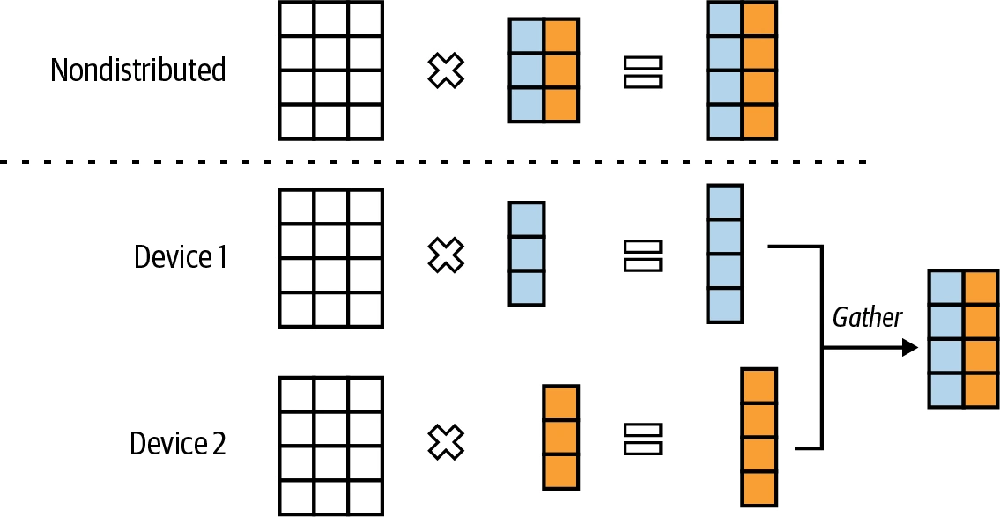
流水线并行
把模型计算分成阶段，每阶段交给一台设备。数据流过模型时，各阶段重叠处理不同数据，实现并行。
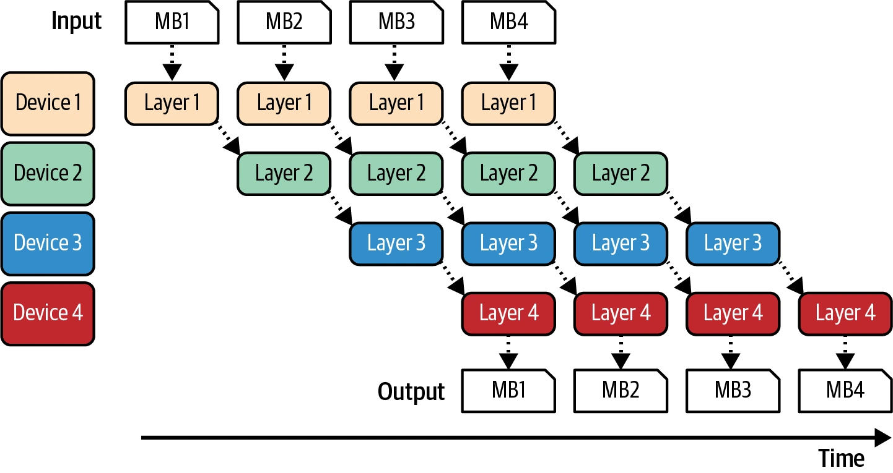
图 9-19 中，一个批次拆成更小的微批次；某台机器处理完微批次后，把输出传给下一机器上的下一部分模型。
它使多机服务大模型成为可能，但阶段间通信会增加每请求总延迟。严格延迟场景通常偏爱副本并行；训练则常用流水线提高吞吐。
上下文并行与序列并行
两种相对少见方法都为提高长序列处理效率。上下文并行把输入序列拆到设备，例如前半在机器 1、后半在机器 2。序列并行则把整段输入所需的算子拆到机器，例如注意力在机器 1、前馈计算在机器 2。
总结
Summary
模型可用性高度取决于推理成本和延迟。更便宜让 AI 决策更可负担，更快让 AI 能进入更多应用。其潜在影响巨大，吸引大量人才持续提出创新方法。
提高效率前要理解怎样测量。本章从延迟、吞吐、利用率开始。语言模型延迟可拆为受预填充影响的 TTFT 与受解码影响的 TPOT。吞吐直接关联成本，延迟与吞吐存在权衡：愿意增加延迟就可能降成本，而降低延迟常要增加成本。
模型运行效率取决于硬件，因此本章也概览 AI 硬件与针对不同加速器优化的要求。
随后介绍多种推理优化技术。大多数应用开发者会使用模型 API 自带优化，而不是亲自实现；但理解可用技术有助评价 API 效率。
模型层优化常修改模型，可能改变行为；服务层通常保持模型不变，只改变提供方式。模型层通用技术包括量化、蒸馏，特定架构还需专门技术。Transformer 的注意力是关键瓶颈，因此出现 KV 缓存管理和注意力内核；自回归顺序解码也是瓶颈，因此出现推测、参考、并行解码。
服务层包括各种批处理和并行策略，以及自回归专用的预填充/解码解耦与提示缓存。
技术选择取决于负载：长上下文更重视 KV 缓存；有长且重叠提示或多轮对话更重视提示缓存；性能要求也影响选择。若低延迟比成本重要，可扩大副本并行，虽然需要更多机器，但每台处理较少请求，能为单请求分配更多资源。
跨用例最有影响的通常是量化（普遍有效）、张量并行（降延迟且可服务大模型）、副本并行（容易实现）与注意力优化（显著加速 Transformer）。
推理优化结束了本书的模型适配技术清单。下一章将把这些技术整合为完整系统。
注释
Notes
- 第 7 章提到，推理只有前向传播，训练同时有前向和反向传播。
- Mark Saroufim 指出训练与推理成本关系：训练总成本 T、每次推理收费 p、可售调用 N 时，只有 T≤p×N 才值得开发。生产使用越多，供应商越能降推理成本；这不适用于在开源模型上转售调用的第三方。
- 作者观察，系统背景的人常用 memory-bound 指带宽受限，AI 背景的人常用它指容量受限。
- Roofline 论文用 memory-bound 指内存带宽受限。
- 预填充实际上是在填充 Transformer 的初始 KV 缓存。
- 把服务分为在线/批量能优先保障重要请求。若无延迟退化上限为 X RPS、实际需求 Y>X，理想情况下不紧急请求进入批量，让在线请求先处理。
- 应用系统提示常可预知，真正难预测的是用户查询。
- 聊天机器人早期有人抱怨回答太快显得不自然；随着用户熟悉，这已不常见。
- LinkedIn 使用 TBT，NVIDIA 使用 ITL。
- Anyscale 实验显示，100 个输入词元对总延迟的影响约等于一个输出词元。
- 人们长期关注 FLOP/s 利用率，但 MFU 一词由 PaLM 论文提出。
- 芯片商可能进行“峰值 FLOP/s 黑客”：在稀疏矩阵和特定形状等条件下实验以抬高峰值，使芯片更有吸引力，但用户更难实现高 MFU。
- 1960 年代计算机只能运行能力有限的单层神经网络。Minsky 与 Papert 1969 年《Perceptrons》认为隐藏层也做不了更多；当时算力不足以反驳，这一论断后来常被视为 1970 年代 AI 资金枯竭的原因。
- GPU 用途早已不只图形，曾有人讨论改名。NVIDIA CEO Jensen Huang 说公司考虑过 GPGPU、XGU，最后相信购买者会理解名字之外的用途。
- 矩阵乘法昵称 matmul，据估计占神经网络全部浮点运算 90% 以上。
- 芯片可为架构设计，架构也可为芯片设计；Transformer 最初由 Google 设计为在 TPU 上快速运行，后来才为 GPU 优化。
- 中低端 GPU 可能使用 GDDR 内存。
- 建设数万 GPU 数据中心的一项主要挑战是找到能保证供电的地点；还要权衡供电、速度、地缘政治。偏远地区电便宜，却增加网络延迟，不适合严格延迟推理。
- 每个生成步骤都要把完整参数从 HBM 传到计算单元，带宽开销大；一次只生成一个词元，使用 FLOP 很少，计算效率低。
- 若 MFU 已达上限，推测解码意义较小。
- Jacobi 方法是一种迭代算法，解的多个部分可同时独立更新。
- 自回归模型注意力计算数量是 O(n²)。
- 卷积常用于 Stable Diffusion 等图像生成模型。
- 很多公司把内核视为商业秘密；能比竞争对手更快、更便宜运行模型就是优势。
- Meta 2024 年的“Llama Inference at Meta”等演讲提到预填充与解码实例比例。
- llama.cpp 也有提示缓存，但写作时似乎只缓存完整提示且仅用于同一聊天。根据代码推测，长对话中它缓存旧消息，只处理最新消息。
- 训练中，副本并行的同类技术叫数据并行。